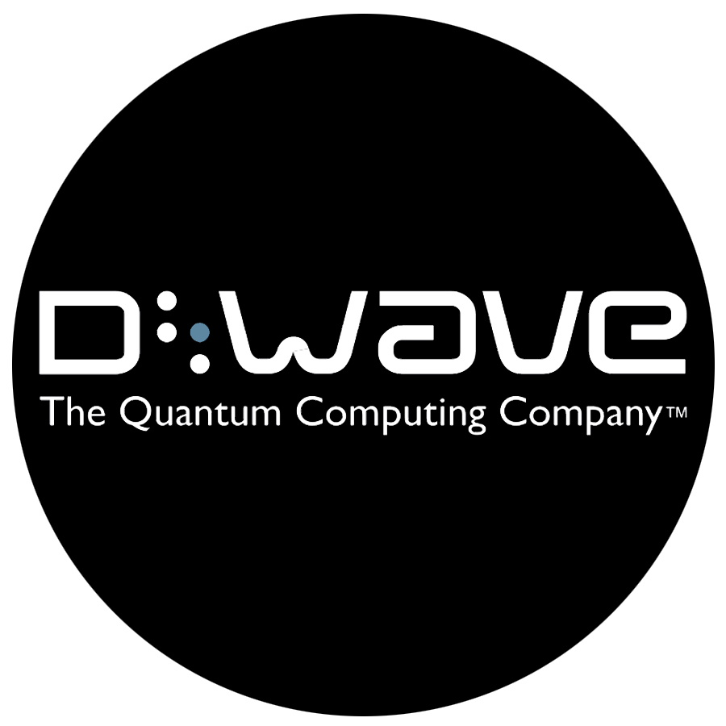
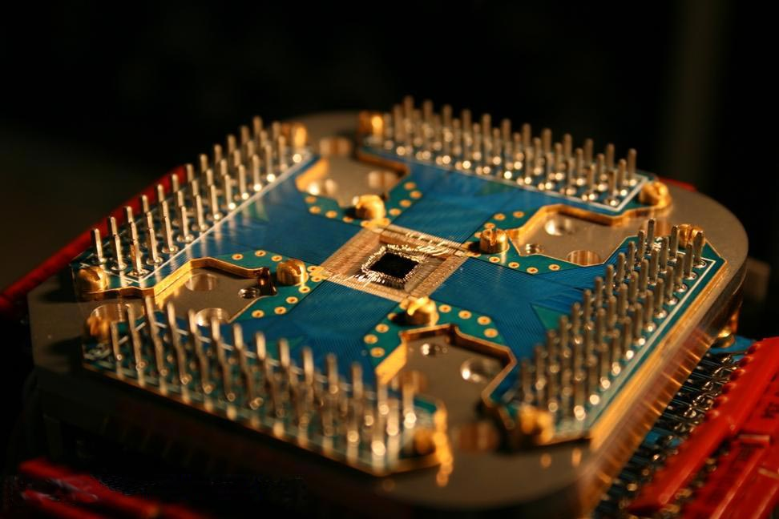

Research
On May 11, 2011, D-Wave Systems announced D-Wave One, described as “the world’s first commercially available quantum computer”, operating on a 128-qubit chipset using quantum annealing to solve optimization problems. In May 2013, a collaboration between NASA, Google and the Universities Space Research Association (USRA) launched a Quantum Artificial Intelligence Lab based on the D-Wave Two 512-qubit quantum computer that would be used for research into machine learning, among other fields of study.

On August 20, 2015, D-Wave Systems announced the general availability of the D-Wave 2X system, a 1000+ qubit quantum computer.
In January 2017 they released D-Wave 2000Q, a quantum computer which has 2048 qubits, 5600 couplers and 128000 Jusephson junctions (the phenomenon of supercurrent—i.e. a current that flows indefinitely long without any voltage applied).
Power and cooling
The superconducting processor generates no heat and is cooled to temperatures up to -272 Celsius. The unique processor environment is defined by the fact that is shielded to 50000x less than Earth’s magnetic field, is in a high vacuum (pressure is 10 billion times lower that atmospheric pressure) and consumes 25 kW/hour. Although, power demand doesn’t increase with successive processor generations.
Ising Minimization
D-Wave annealing-based quantum processors are designed to find minimum-cost solutions to the Ising minimization (IM) problem, defined on a graph G = (V, E) as follows. Given a collection of fields h = {hi : i ∈ V } and couplings J = {Jij : (i, j) ∈ E}, assign values from {−1, +1} to n spin variables s = {si} so as to minimize the energy function E(s) = ∑ hi si with(i € V) + ∑ Jij si sj and (i,j € E)
Chimera topology
A Chimera graph of size Cs is an s × s grid of Chimera cells (also called unit tiles or unit cells), each containing a complete bipartite graph on 8 vertices (a K4,4). Each vertex is connected to its four neighbors inside the cell as well as two neighbors (north/south or east/west) outside the cell: therefore every vertex has degree 6 excluding boundary vertices. In this study, as in others, we vary the problem size using square subgraphs of the full graph, from size C4 (128 vertices) up to C16 (2048 vertices). Note that the number of problem variables n = 8s2 grows quadratically with Chimera size.
BIBLIOGRAPHY
[1] https://en.wikipedia.org/wiki/Josephson_effect
[2] https://en.wikipedia.org/wiki/D-Wave_Systems
[3] https://arxiv.org/pdf/1701.04579.pdf
[4] https://www.dwavesys.com/quantum-computing
[5] https://www.dwavesys.com/resources/publications